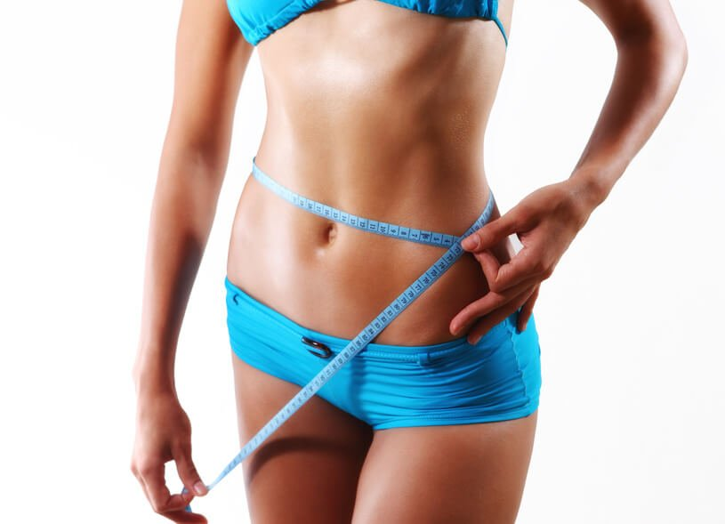

Reducción anticelulítica
Indicado en celulitis, sobrepeso y adiposidades localizadas. Estudiamos cada caso y su fase para diseñar un protocolo propio con termoterapia, vacumterapia, presoterapia, cavitación, detox o radiofrecuencia.
A medida